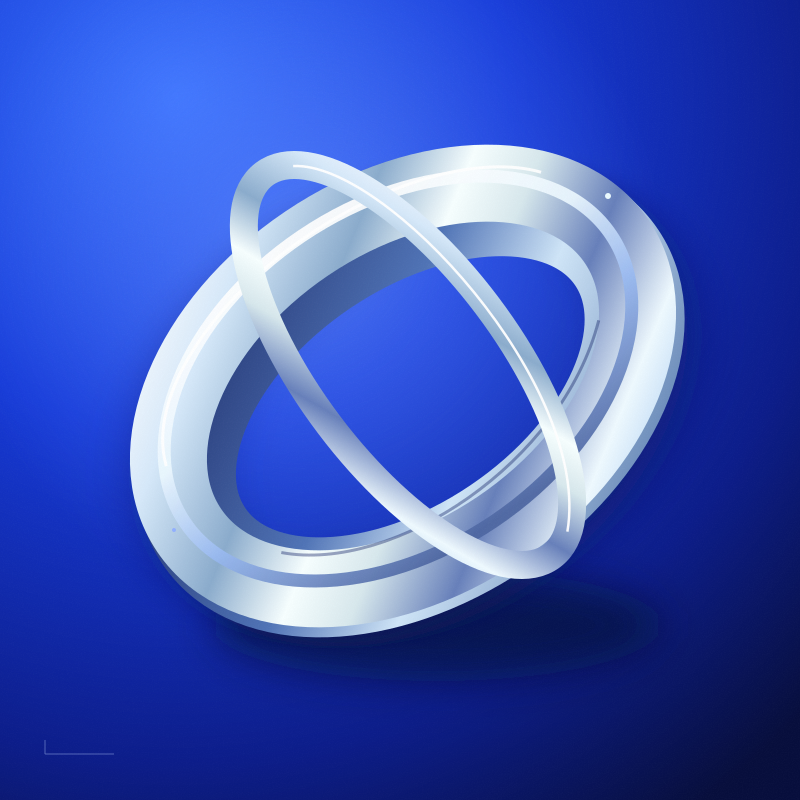

Signals from Home
WAVE Sound Lab

Drop your audio or video files here.
Checking saved library…
Media is stored on this device when browser storage is available. Keep your original files; clearing app/browser data or uninstalling removes the saved library. Playlists and audio stay on this device between launches; they do not sync across devices.
Play audio and video directly when supported by your browser. Local conversion adds support for many AVI, MKV, MOV, WMV and other formats. Encrypted, damaged or oversized files may not convert.
Space Play / pause Shift + ← / → Seek
Gather your favorite sounds in one place.
Convert this file on your device into a browser-compatible format. Your media is never uploaded.
Conversion supports files up to 256 MB and can take several minutes. Encrypted or damaged files may not be supported.
Load audio from a YouTube video or SoundCloud track into WAVE’s music player.
Audio stays in your library and playlists after closing WAVE when device storage is available. New downloads need a connected audio server; saved tracks play offline.
The server receives the link and retrieves its audio. Use a server you trust. GitHub Pages cannot run this service. The local test site can connect to http://127.0.0.1:4181.
Once loaded, play from Music with WAVE’s controls, playlists, and visualizer. Closing this window cancels loading.
Your music room, one tap from your Home Screen.
For sideloading, allow installation from your browser when Android asks. Get updates from this same download.
Your saved files stay on this device. Streaming needs internet. The Android APK includes the player for offline use. Saved audio and playlists remain between launches. New YouTube/SoundCloud downloads need a reachable HTTPS audio server.